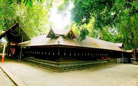

Home
(current)
Explore
Districts
Adventure
Holiday Packages
Cusines
Heritage
The Wild
Reviews
Destination
WaterFalls
Beaches
Museum
Contact Us
Sign In
Search
ALLEPPEY
Alappuzha (or Alleppey) is a city on the Laccadive Sea in the southern Indian state of Kerala. It's best known for houseboat cruises along the rustic Kerala backwaters, a network of tranquil canals and lagoons. Alappuzha Beach is the site of the 19th-century Alappuzha Lighthouse. If Kerala is the ‘Backwater Capital of India’, Alleppey should be called as the ‘Backwater Paradise in God’s Own Country’! Located around 62km from the stunning city of Cochin and around 155km from Trivandrum, Alleppey or ‘Alappuzha’ is among the most coveted tourist destinations in Kerala.Located on the banks of the turquoise Vembanad Lake, this tourist plays a host most of the houseboat cruises in Kerala. Fondly called the ‘Venetian Capital of Kerala’ or the ‘Venice of the East’, this picturesque city is known for its enchanting backwaters, scenic beauty, azure lagoons, evergreen coconut groves, intricate network of canals, and other natural bounties. Whether you are a nature lover, searching for romantic destinations, planning for a family or a solo trip, Alleppey in Kerala can be your next destination!
How to Reach:
Bus
KSRTC has regular buses to Alleppey from almost all the major cities in God’s Own Country; visitors can easily avail luxury, premium or regular buses to reach Alleppey. Regular buses are also available from nearby cities like Bangalore, Chennai, Mysore, and Coimbatore.
Train
Alleppey has its own railway station, and is well-connected with cities like Trivandrum, Cochin, and other major cities. The station also offers passage to several other passenger mails plying from cities outside the state.
Flight
Cochin International Airport is less than 100km away from Alleppey, and is well-connected with major Indian cities through regular flights. Visitors from within the country and several international destinations can book a flight to this airport, and hire private taxis or cans to reach Alleppey.
Places to Visit
Alleppey Beach:
Beach goers on a Kerala trip will surely fall in love with this stunning beach in Alappuzha! Quiet, calm, serene, and pleasant, Alleppey Beach is known for its favourable ambience, tepic sands, and a myriad list of beach activities. If luck favours, visitors can also enjoy dolphin sighting while in Alleppey Beach.
Krishnapuram Palace:
An 18th century palace, Krishnapuram Palace was built during the reign of MarthandaVarma, and is a major landmark in Alleppey. Built in typical Kerala architecture, this 2-storeyed palace is also the abode of the largest mural paintings in God’s Own Country; the painting is known as ‘GajendraMoksham’ and measures around 14x11ft.
Marari Beach:
Fringed with lush coconut groves, Marari Beach is around 11km from the heart of Alleppey, and is revered as one of the most appealing and tranquil beaches in Kerala. While on a visit to this remarkable beach, visitors can enjoy and rejuvenate themselves with Ayurvedic massages and therapies.
Vembanad Lake:
While booking a Kerala tour package to Alleppey, visitors don’t have to ask for a visit to the Vembanad Lake; it is one such tourist spots in Kerala that is included in all the tour packages! Touted as the longest lake in India and the largest lake in God’s Own Country, it is the paradise for the houseboat cruisers.
Things to do
Houseboat Cruises:
This should be the first thing to do in Alleppey! Famed as the ‘Backwater Capital’ of Kerala, this Alappuzha is the home to these amazing boats that take the visitors for a fun-filled and exciting cruise over the silent backwaters and introduce them with the enchanting beauty of God’s Own
Beach Tours:
Alleppey has all the reasons to be called as a stunning beach destination in the country. Visitors on their Kerala trip can revel in the imposing beauty and tranquillity that exists around the Alleppey and Marari beaches and make their holidays a fun-frolic
Ayurvedic Therapies:
Kerala itself is a synonym to Ayurveda! And while visiting Alleppey, visitors must experience the essence and aura of Ayurveda with some of the most relaxing and rejuvenating massage therapies and treatments.
Enjoy Snake Boat Race:
If you happen to visit Alleppey during the month August (or harvesting season in Kerala), you can witness the much coveted Snake Boat Race. Alleppey also serves as an important access point to the enthusiastic ‘Nehru Trophy Boat Race’ in Kerala.
Gallery
